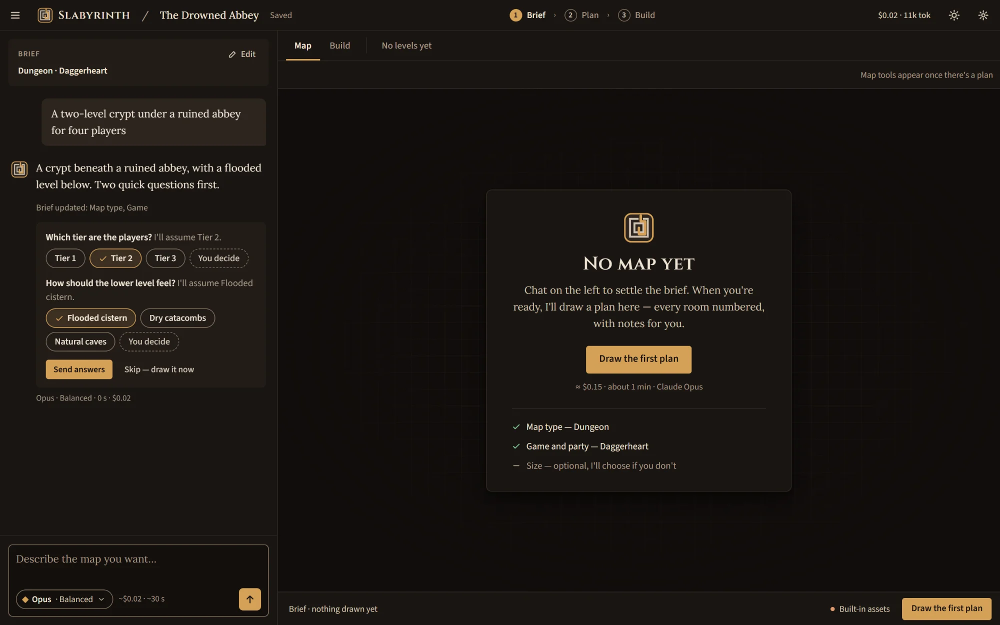
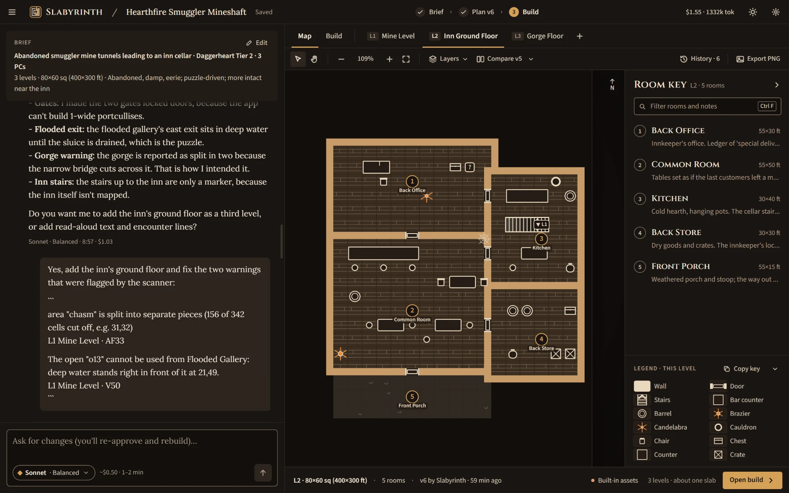
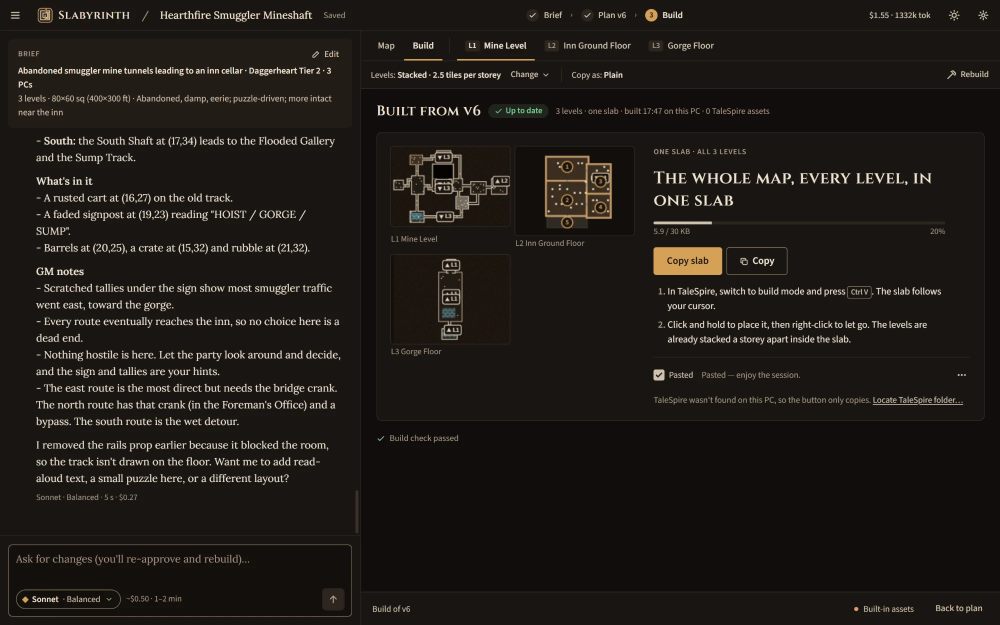

For TaleSpire game masters
Slabyrinth
Describe the map you need. Shape it on a 2D plan with Claude. Paste the finished slab into TaleSpire.
Free and open source (MIT). Windows installer or portable .exe; Linux AppImage (x86-64). All downloads and release notes

How it works
From an idea to a slab in four steps
-
Talk
Say what you need, a dungeon, a town, a tower, a forest clearing, in your own words. Claude fills in the brief as you go and asks a quick question when something matters, like the party's tier.

-
Plan
The map appears as an overhead plan with numbered rooms, GM notes and a room key. Switch between levels, click a room to talk about it, ask for changes, and step back through every version.

-
Check
Every draft gets a playability check: doors that lead somewhere, rooms you can actually reach, stairs that land, furniture that doesn't block the way. Claude fixes what it finds, and anything left is listed for you.

-
Build & paste
Approve the plan and Slabyrinth builds it into a TaleSpire slab, every level stacked at the right height, in a single slab whenever it fits. Copy it, press Ctrl+V in TaleSpire's build mode, and place it.



Also in the box
Made for the night before the session
Several levels
Cellars, towers and caves below, joined by stairs, ladders and trapdoors, built stacked or side by side.
Pause and pick up again
Conversations, every plan version and your builds are saved as you go. Reopen a map and carry on where you stopped.
PNG export
Save the 2D map as an image, with a GM version or a player-safe one without the notes.
Your game, your model
Built with Daggerheart and D&D in mind. Choose the Claude model and effort per conversation, and see what each turn cost.
Dark or light
Dark by default, with a light parchment theme and a "match system" option.
Uses your TaleSpire library
Reads the current tile and prop catalog from your TaleSpire install, so builds use the pieces your game has.
Planned LM Studio as a local chat provider, and bringing an existing slab into a map. Not in the app yet.
What you need
Three things
- A Windows or Linux PC
- 64-bit Windows 10 or 11, or an x86-64 Linux that runs AppImages (FUSE 2). The builds are not code-signed yet, so Windows SmartScreen warns on first run; the README explains what to do.
- Your own Anthropic API key
- Slabyrinth talks to Claude with a key you create in the Anthropic Console. Usage is billed to you by Anthropic, not by this project. The app shows an estimate before each step and a running total, and warns you at spend limits you set.
- TaleSpire
- Install it on the same PC so the app can read the current tile catalog. Without it Slabyrinth still works with a small built-in set of pieces, best effort.